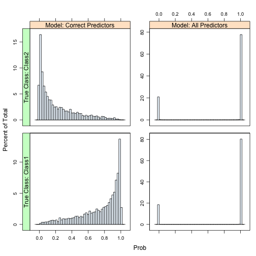
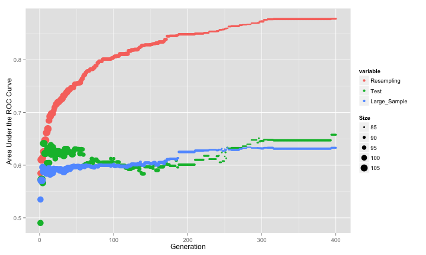
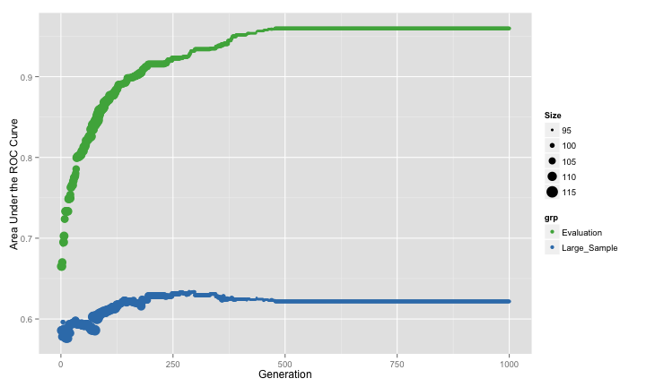
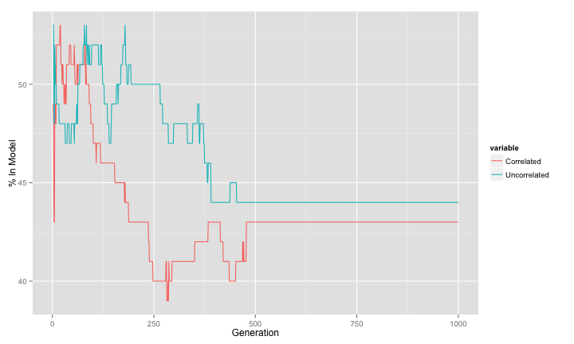
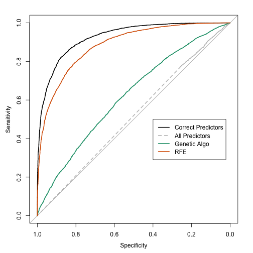
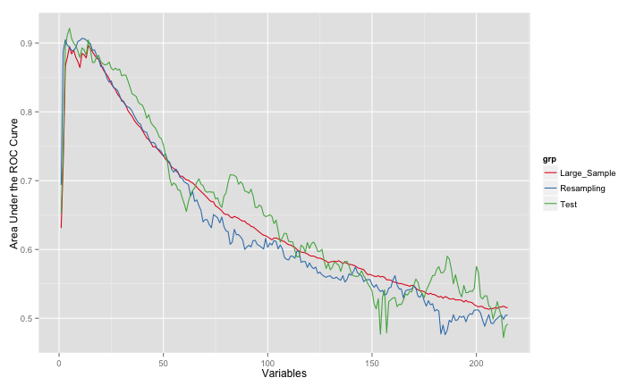

Feature Selection Strikes Back (Part 1)
In the feature selection chapter, we describe several search procedures (“wrappers”) that can be used to optimize the number of predictors. Some techniques were described in more detail than others. Although we do describe genetic algorithms and how they can be used for reducing the dimensions of the data, this is the first of series of blog posts that look at them in practice using simulated data described in a previous post.
Genetic algorithms are optimization tools that search for the best solution by mimicking the evolution of a population. A set of predictor subsets are evaluated in terms of their model performance and the best sets combine randomly to form new subsets. In the GA lingo, each iteration has a collection of subsets (i.e. population of chromosomes) with a corresponding model performance value (i.e. their fitness values). At each step of reproduction, there is some probability of random mutations. This has the effect of randomly turning some predictors off or on in each subset. The algorithm continues for a set number of generations.
One question is how to evaluate the fitness function. There are a few options:
- For each subset, employ the same cross-validation approach used with the full data set. We know from the literature that this will not be a good estimate of future performance because of over-fitting to the predictor set. However, can it be used to differentiate good subsets from bad subsets?
- Use the test set. This is a poor choice since the data can no longer provide an unbiased view of model performance. Single test sets usually have more noise than resampled estimates.
- Set aside some data from the training set for calculating model performance for a given subset. We may eventually end up over-fitting to these data, so should we randomly select a different hold-out set each time? This will add some noise to the fitness values.
In the literature, how is this usually handled? From what I’ve found, internal cross-validated accuracy is used, meaning that the model is cross-validated within the feature selection. For this reason, there is a high likelihood that the estimate of the model’s performance will be optimistic (since it does not reflect the uncertainty induced by the search procedure).
For this example, we’ll simulate 500 training set samples and add a total of 200 non-informative predictors. For the extra predictors, 100 will be a set of uncorrelated standard normal random variables while 100 will be multivariate normal with a pre-defined correlation structure. The correlated set will have variances of 1 and an auto-regressive structure (AR1). While the is no time component to this model, using this structure will simulate predictors with various levels of correlation. To do this, a function called twoClassSim is used. The code for this document is here, so you can see and use this function yourself.
Three sets of data were simulated: a training set of 500 samples, a test set of 200 samples and a very large set that will help us approximate the true error rate.
set.seed(468)
training <- twoClassSim(500, noiseVars = 100,
corrVar = 100, corrValue = 0.75)
testing <- twoClassSim(200, noiseVars = 100,
corrVar = 100, corrValue = 0.75)
large <- twoClassSim(10000, noiseVars = 100,
corrVar = 100, corrValue = 0.75)
## Get the names of the truly active predictors
realVars <- names(training)
realVars <- realVars[!grepl("(Corr)|(Noise)", realVars)]
## We will use cross-validation later, so we setup the folds here so we
## can make sure all of the model fits use the same data (not really
## required, but helpful)
cvIndex <- createMultiFolds(training$Class, times = 2)
ctrl <- trainControl(method = "repeatedcv",
repeats = 2,
classProbs = TRUE,
summaryFunction = twoClassSummary,
allowParallel = FALSE,
index = cvIndex)For these data, one model that has fairly good performance is quadratic discriminant analysis (QDA). This model can generate non-linear class boundaries (i.e. quadratic patterns) and models the covariance matrix of the predictors differently for each class. This means that for two classes and p predictors, a total of p (p+1) parameters are estimated (and these are just the variance parameters). With a large number of non-informative predictors, this can negatively affect model performance.
If we knew the true predictor set, what would we expect in terms of performance? Although QDA has no tuning parameters, I’ll use two repeats of 10-fold cross-validation to estimate the area under the ROC curve. Additionally, the AUC will also be derived from the test set and using the large sample set too.
The resampled area under the curve was the area under the ROC curve was 0.91 and the test set estimate was 0.946. There some difference there and the large sample estimate of the AUC is 0.928. Overall, performance is pretty good.
Now, what happens when you use all the available predictors?
The estimates of performance for the AUC were: 0.505 (resampling), 0.492 (test set) and 0.515 (large-sample). All of these indicate that QDA tanked because of the excess variables.
The ROC curves for the large-sample predictions are:
 Another nasty side-effect when you have a large number of predictors (215) with a relatively small set of training set data (500) with several of the classical discriminant models is that the class probabilities become extremely polarized. We demonstrate this in the book and the same issue occurs here. The plot below shows histograms of the Class 1 probability for the large-sample set for each model. There are panels for each of the true classes.
Another nasty side-effect when you have a large number of predictors (215) with a relatively small set of training set data (500) with several of the classical discriminant models is that the class probabilities become extremely polarized. We demonstrate this in the book and the same issue occurs here. The plot below shows histograms of the Class 1 probability for the large-sample set for each model. There are panels for each of the true classes.

The model with the true predictors has fairly well-calibrated class probabilities while the probabilities for the model with all the predictors are concentrated near zero and one. This can occur for both linear and quadratic discriminant analysis as well as naive Bayes models. In the book, we also show that this is independent of the amount of signal in the data.
Clearly, there is a need for some feature selection. To start, I used a genetic algorithm to maximize performance of the QDA model. The search procedure for these data used most of the defaults from the GA package:
- 400 generations
- an initial population of 50 chromosomes
- a mutation probability of 10%
- a cross-over probability of 80%
- elitism of 2
- the area under the ROC curve was estimated using two repeats of 10-fold cross-validation was used
In total, about 400 * 50 * 20 = 400,000 QDA models were evaluated. I also ran the models within each generation in parallel, which makes a good dent in the computation time.
To do this, I used a slightly modified version of the GA R package. Our changes enabled us to save the chromosome value for the best result per generation (for further analysis) and use parallel processing. The package maintainer (Luca Scrucca) has been testing these additions.
I have to define a fitness function that defines what should be maximized. I’ll use caret to tune the model and return the resampled estimate of the area under the ROC curve:
## 'ind' will be a vector of 0/1 data denoting which predictors are being
## evaluated.
ROCcv <- function(ind, x, y, cntrl) {
library(caret)
library(MASS)
ind <- which(ind == 1)
## In case no predictors are selected:
if (length(ind) == 0) return(0)
out <- train(x[, ind, drop = FALSE], y,
method = "qda",
metric = "ROC",
trControl = cntrl)
## this function returns the resampled ROC estimate
caret:::getTrainPerf(out)[, "TrainROC"]Now, to run the algorithm with the GA package:
library(GA)
set.seed(137)
ga_resampled <- ga(type = "binary",
fitness = ROCcv,
min = 0,
max = 1,
maxiter = 400,
nBits = ncol(training) - 1,
names = names(training)[-ncol(training)],
## These options are passed through the ga funciton
## and into the ROCcv function
x = training[, -ncol(training)],
y = training$Class,
cntrl = ctrl,
## These two options are not yet in the GA package.
keepBest = TRUE,
parallel = TRUE)The results are summarized in the image below, where the three estimates of the area under the ROC curve is shown. The size of the points is indicative of the number of predictors used in the best chromosome of each generation.

The resampled estimate has no idea that it is embedded inside of a feature selection routine, so it does not factor in that variability. The search steadily increases the AUC until it converges. However, the test set AUC (as well as the large-sample version) initially increase but then converge to a much smaller value that the cross-validation results would lead one to believe. These two pessimistic estimates of the AUC appear to be in-line with one another although the large-sample results are slightly lower in many generations. It looks at though the model is over-fitting to the predictors and the resampling procedure is not picking up on this.
As previously mentioned, another tactic is to utilize a separate test set to measure the area under the ROC curve. If we have a lot of data, it may be a good idea to have an “evaluation” set of samples to measure performance during feature selection and keep a different (true) test set to only use at the end.
Let’s sacrifice our test set for the genetic algorithm and see if this helps. The new objective funciotn is:
## An added 'test' argument...
ROCtest <- function(ind, x, y, cntrl, test) {
library(MASS)
ind <- which(ind == 1)
if (length(ind) == 0) return(0)
modFit <- qda(x[, ind], y)
testROC <- roc(test$Class,
predict(modFit,
test[, ind, drop = FALSE])$posterior[, 1],
levels = rev(levels(y)))
as.vector(auc(testROC))
}The updated call to the ga function is:
set.seed(137)
ga_test <- ga(type = "binary",
fitness = ROCtest,
min = 0,
max = 1,
maxiter = 1000,
nBits = ncol(training) - 1,
names = names(training)[-ncol(training)],
x = training[,-ncol(training)],
y = training$Class,
cntrl = ctrl,
test = testing,
keepBest = TRUE,
parallel = TRUE)Here are the results:

If this were not a simulated data set, we would only see the green curve. There is a similar pattern between the resampled ROC and the results from our evaluation set (formerly known as the test set). However, the GA is still selecting too many predictors and, as a consequence, the true performance is still pretty poor. Basically, the evaluation set is not showing the degradation of performance due to the non-informative predictors (i.e. we are over-fitting to the evaluation set).
The genetic algorithm converged on a subset size of 97 predictors. This included 7 of the 10 linear predictors, 1 of the non-linear terms and both of the terms that have an interaction effect in the model. Looking across the generations, we can see the frequency that each type of non-informative predictor was retained:

Let’s now fit a QDA model based on these predictors and see what the large-sample ROC curve looks like:
## The bestBinary item is a list of the best chromosomes from
## each generation. We will look at the last one and fit a QDA
## model.
finalVars <- ga_test@bestBinary[[length(ga_test@bestBinary)]]
finalFit <- qda(training[, finalVars], training$Class)
## Get the large sample results:
finalLarge <- roc(large$Class,
predict(finalFit,
large[, finalVars])$posterior[, 1],
levels = rev(levels(large$Class)))
finalLarge
##
## Call:
## roc.default(response = large$Class, predictor = predict(finalFit, large[, finalVars])$posterior[, 1], levels = rev(levels(large$Class)))
##
## Data: predict(finalFit, large[, finalVars])$posterior[, 1] in 4684 controls (large$Class Class2) < 5316 cases (large$Class Class1).
## Area under the curve: 0.622The large-sample estimate of the area under the ROC curve is 0.622, which is not as good as the true model (0.928) but better than the worst-case scenario (0.515). The ROC curves are:

In the next blog post, I’ll look at other ways of improving the genetic algorithm. Before we do that though, let’s make a comparison to another feature selection procedure: recursive feature elimination (RFE). RFE is basically a backwards selection procedure that uses a some variable importance metric to rank the predictors. If will use the area under the ROC curve for each predictor to quantify its relative importance.
Here, all subset sizes were evaluated and the procedure was cross-validated using the same two repeats of ten-fold cross-validation. The QDA models were trained in the same manner:
## caret includes some pre-defined code for RFE, including code to do
## linear discriminant analysis (LDA). The code for LDA and QDA are
## almost identical, so we can recycle the LDA code and only change
## the model fit function (to use QDA) and the function that computes
## the model summary statistics (so that we can get the area under the
## ROC curve):
qdaFuncs <- ldaFuncs
qdaFuncs$fit <- function(x, y, first, last, ...) {
library(MASS)
qda(x, y, ...)
}
qdaFuncs$summary <- twoClassSummary
qdaRfe <- rfe(x = training[, -ncol(training)],
y = training$Class,
sizes = 1:(ncol(training) - 1),
metric = "ROC",
rfeControl = rfeControl(method = "repeatedcv",
repeats = 2,
index = cvIndex,
functions = qdaFuncs))Here, there are a maximum of 215 * 20 = 4,300 models being evaluated. In comparison to the genetic algorithm, not only is this fewer models, but many of them have smaller subset sizes than those shown in the figures above.
The potential down-side to this feature selection technique is that it is greedy; once a predictor is discarded, it is never considered again in a subset. For this reason, RFE may achieve a local optimum where as the genetic algorithm has the ability to find a global optimum.
This approach filtered far more predictors. The profile of the area under the ROC curve (with all three estimates of the area under the ROC curve):

The RFE algorithm fit the final QDA model to 11 predictors, including 5 linear effects and both predictors associated with the interaction. However, it did not capture any of the non-linear terms and picked up 4 non-informative predictors. Of the noise predictors, it was not biased towards the correlated set (only 1 of the 4 were correlated). The estimates were consistent with one another and the area under the ROC curve was estimated as 0.907 using resampling, 0.893 using the test set and 0.885 using the large-sample holdout. The consistency of these values is probably due to the RFE procedure constructing external resampling, meaning that each cross-validation did a separate feature elimination sequence and used held-out data to estimate performance. This prevented the type of overly optimistic estimates that were seen earlier.
The large-sample ROC curves are:
So far, RFE is more effective than the genetic algorithm at sub-setting features for these data.
The next blog post will look at modifications of the genetic algorithm that will improve performance.
The R packages loaded at the time of the analysis were: base (2.15.2), caret (5.15-87), cluster (1.14.3), datasets (2.15.2), doMC (1.2.5), foreach (1.4.0), GA (1.3), ggplot2 (0.9.2.1), graphics (2.15.2), grDevices (2.15.2), iterators (1.0.6), knitr (0.8), lattice (0.20-10), latticeExtra (0.6-24), MASS (7.3-22), methods (2.15.2), multicore (0.1-7), nlme (3.1-105), plyr (1.7.1), pROC (1.5.4), RColorBrewer (1.0-5), reshape2 (1.2.1), stats (2.15.2) and utils (2.15.2)
(This article was originally posted at http://appliedpredictivemodeling.com)